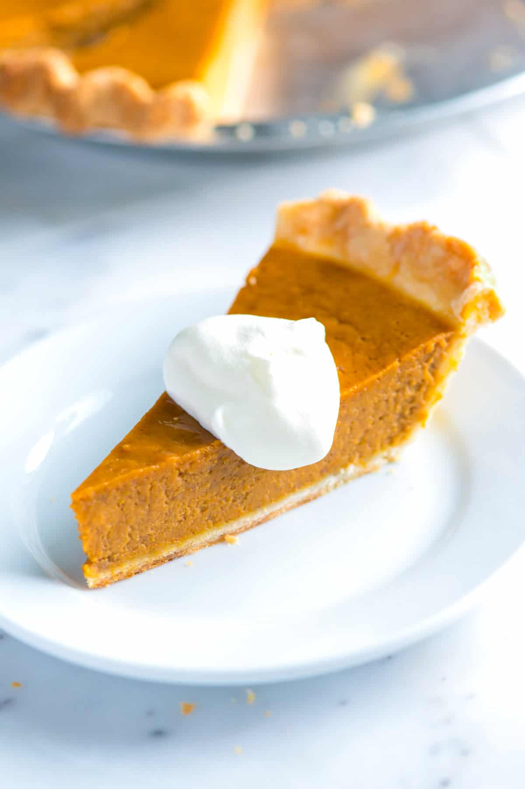

Pumkin Pie
Home

Perfect Pumpkin pie
This recipe has been in my family for generations. It is the perfect blend of spices and pumpkin.
When you take this to your next holiday gathering everyone will thank you. This recipe goes beyond pumpkin spice.
Ingredients
- 1 (9inch) graham cracker crust
- 3 large eggs
- 1/2 cup granulated sugar
- 1/3 cup light brown sugar
- 1 (15 oz) can of pure pumpkin puree
- 3/4 cup heavy whipping cream
- 1 teaspoon vanilla extract
- 1 1/2 teaspoons ground cinnamon
- 1/2 teaspoon ground ginger
- 1/4 teaspoon ground cloves
- 1/4 teaspoon fine sea salt
Steps
- Whisk the eggs and both sugars together until smooth.
Add pumpkin puree, cream, vanilla, cinnamon, ginger, cloves, and salt.
Whisk until well blended.
- Preheat the oven to 425°F (218°C). Set aside a large baking sheet.
- Place the pie dish on your baking sheet. Pour the pumpkin filling into the pie shell.
- Bake the pumpkin pie at 425°F (218°C) for 15 minutes.
Reduce the oven temperature to 375°F (190°C) and bake for 35 to 45 minutes or until a toothpick or thin knife plunged it into the pie, about 2 inches from the edge, comes out clean.
Rotate once or twice during baking. If, while the pie is baking, the top of the crust becomes too dark, cover it with a thin strip of aluminum foil.
- Cool completely on a wire rack for 2 to 3 hours or until room temperature.
Serve or refrigerate overnight (the pie sets even more after a night in the fridge).
- Cut into eight wedges and serve alone or topped with whipped cream.